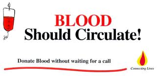
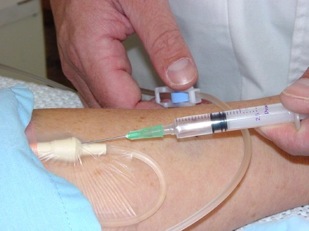
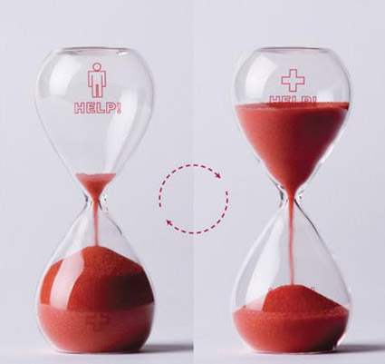

Tips on Blood Donation
 Have a good meal at least 3 hours before donating blood.
Have a good meal at least 3 hours before donating blood.
- Accept the snacks offered to you after the donation, it is vital that you have them. You are recommended to have a good meal later.
- Avoid smoking on the day before donating. You can smoke 3 hours after donation.
- You will not be eligible to donate blood if you have consumed alcohol 48 hours before donation.
Misconceptions about donating blood
- "I will feel drained and tired after donating" - You will not feel drained or tired if you continue to drink fluids and have a good meal.
- "I cannot resume normal activities" - You can resume all your normal activities, though you're asked to refrain.
- "I will have low blood" - If you are okayed to donate by the doctor you will still have surplus blood after the donation.
- "I can't take alcohol..." - You can on the next day.
- "It will be painful while donating" - No, you will not feel any pain.
- "I will feel dizzy and may faint" - You will not faint or feel uncomfortable after donating blood.
- "I may get AIDS!" - No! Make sure disposable syringes are used and all measures are taken to keep you germ free.
- "My blood is common. I don't think there will be demand for it" - That is why the demand for your type is greater than for rare types.
Who can donate blood?
- Be at least 17 years old. (In some states, you can donate if you are 16 years old and get permission from a parent.
- Weigh at least 110 lb (50 kg).
- Be in good health.
You may not be able to donate if :
- You donated blood in the past 56 days.
- You don't have enough iron in your blood. Before you donate, you will have a test to check your iron level.
- You are pregnant.
- Your blood pressure is too high. Your blood pressure will be checked before you donate.
- You take certain medicines.
- You have certain health problems
What should you do before you donate blood?
- Make sure you feel good. Don't give blood if you feel ill.
- Eat a good breakfast or lunch. But avoid fatty foods. They can affect some of the tests done on donated blood to make sure it's safe.
- Drink plenty of fluids.
- Get plenty of sleep the night before.



